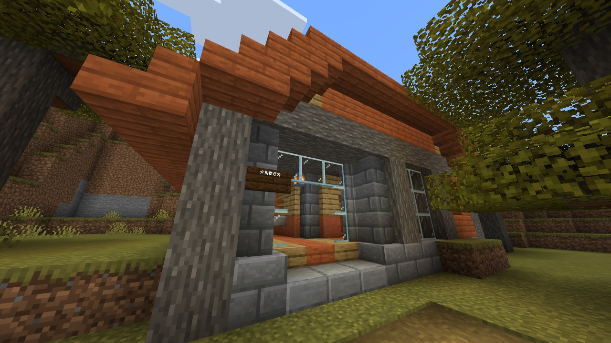
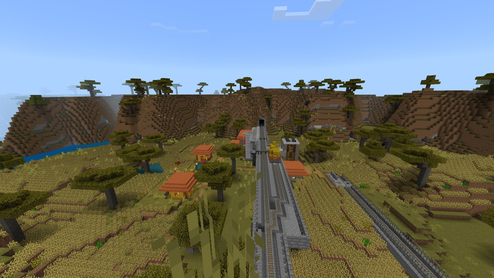
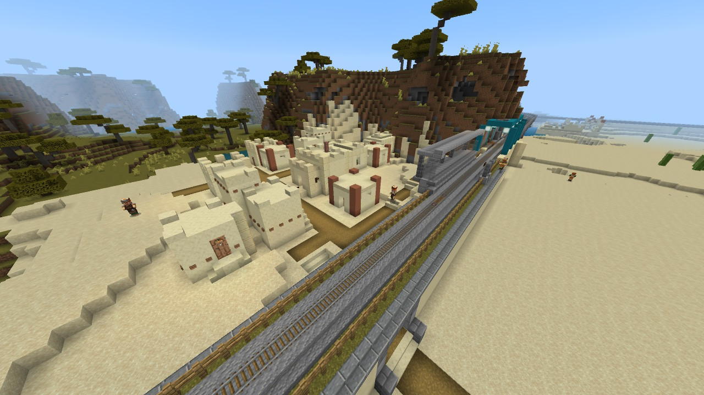

大川準郡(おおかわじゅんぐん)は、砂砦県北西部に位置する準郡である。
↑大川郡の中核的な街。
大川準郡(おおかわじゅんぐん)
人口 196人(2023年1月現在)
ようす
準郡ではよくあることだが、構成町村同士が接していないので町村ごとに様子がかなり異なってくる。
| 郡町村名 | 人口 |
|---|---|
| 大川準郡 | 196 |
| 大川町 | 153 |
| 大粗村 | 10 |
| 古杭村 | 33 |

大川町

↑右下(つまり西大川駅の西側)に建設中の住宅が見える。かつては西大川が本当に街の西端であったがそれも変わりつつある。
大川準郡の代表的な町
三方を北道川に囲まれており、大川の地名の“川”はこれが由来だと思われる。
もともと砂砦市の一地区に組み込まれる候補であったがその後取り消された。その影響で砂砦市電が大川の街まで伸びている。
少し前までは砂砦市のベッドタウンになるのではないかと目されていたが、砂砦市自体が港湾地区のベッドタウンと化しつつある結果､大川町もそれにそう形になると思われる。(砂砦県自身も砂砦市その他に人口を集めつつ港湾地区周辺の土地に産業施設を集中させる方針で動いているように見える。)
大川市電通り
市電西大川駅前、市電の線路沿いに並ぶ商店街。
市電の線路が歩道を兼ねておりこの区間の電車は徐行する。
大川郡庁

大川郡庁は西大川駅のさらに西にあり、大川郡庁前駅が最寄駅である。
大粗村

地名の由来は不明
元は駅の付近に申し訳程度の集落があっただけだったが、現在は小麦畑が広がる。
古杭村

元は大粗村同様駅の付近に申し訳程度の集落があっただけだったが、一時期国鉄貨物ターミナルの設置工事の為大多数の住民が退去した時期があった。
結局のところ工事は中止になり、それ以降は喧騒に囲まれた砂砦市から一駅の静かな住宅地として再出発を図っている。
交通網
国鉄
(郡外)-古杭-大粗-西大川-(郡外)
砂砦市電B系統
(郡外)-北大川-元町-西大川-大川郡庁前